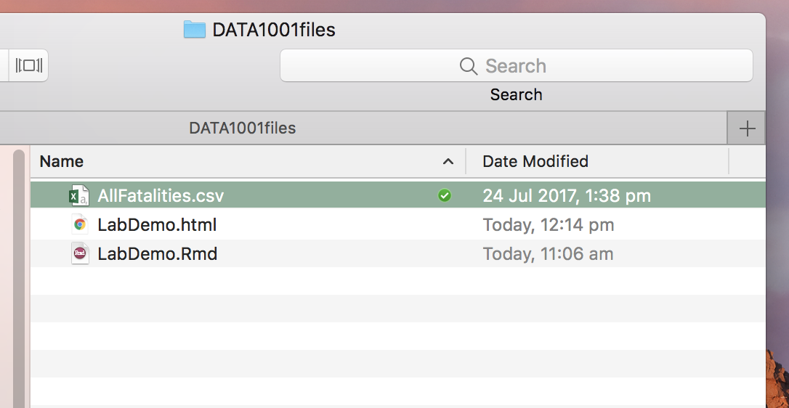

Chapter 3 Import data into R

There are so many different ways to import data into R, so you have lots of options. It can be confusing at first. So just experiment with the different methods below, and find what suits you!
3.1 From the internet
You can import data directly from the web.
- If you right click on the datasets in Canvas, you’ll get the url. For example, see Lab2
Road.
- This is a super easy method, which we will use in the labs. However, it doesn’t work if your data doesn’t have an url (eg finding your own data for a Project).
3.2 From your folder
Download a data set from the Canvas Lab page, for example
AllFatalities.csvfrom Lab2.Put the datafile into the
DATA1001filesfolder where your.Rmd. file is located.

- Read the data into RStudio.
3.3 From a data subfolder
- Longer-term when you have more data files, it can be useful to create a sub folder called
datawithin yourDATA1001filefolder.


- Now you can store all your data inside
dataand then read your data straight into R.
Note: This method works well, unless your working directory is not pointed at your DATA1001files folder. ie Your computer needs to know where to get the data file from. See the next section for how to set your working directory to your DATA1001files folder, if it is currently pointing somewhere else.
3.4 Using file.choose() and working directories
The working directory is where RStudio is pointing, ie where it is draws files from and where it save files to.
- It is generally best practise to store your data near your .Rmd file in the DATA1001files folder. In that case, if you open the .Rmd file directly from there, RStudio will set the working directory to that folder.
- However, if you are not sure what’s happening with your working directory … here’s one easy plan!.
- Check where your current working directory is
- Ask RStudio to browse the files on your computer. This will give you the file pathway (ie where the file is stored).
For example, for Mac users some possible paths might be:
desktop: “/Users/johnsmith/Desktop”
folder on desktop: “/Users/johnsmith/Desktop/DATA1001”
dropbox: “/Users/johnsmith/Dropbox”
- Set the working directory to that path.
- Read your data in
Note: Students often find working directories confusing at first! But once you have mastered it, it becomes straightforward.
3.5 Using Import dataset
Another way to import data, is to use the “Import Datatset” tab in RStudio.

3.6 Note about Excel files
- Note: If your file is in Excel format
PBS2015.xlsx, then you need the packagereadxlto first be installed. For example, consider this Excel data here.
# Given file.xlsx
install.packages("readxl") # You only need to do this once in RStudio
library(readxl) # You need to do this each time
data = read_excel("data/PBS2015.xlsx")3.8 Data Wrangling **
Data preparation is an essential part of statistical analysis and can be very time-consuming. It can involve cleaning or tidying, cleansing scrubbing, reshaping, reforming, splitting and combining. It must be performed carefully and transparently.
The aim is to change Messy (or Raw or Dirty) Data into Clean Data, which is correctly and consistently formatted and ready for analysis.This can involve removing redundant or useless information, standardising information (like calendar dates), separating or combining columns, and dealing with warnings.
Simple data can be cleaned in Excel. Get rid of any extra formatting, so that the data looks like:
| ID (if applicable) | Variable1 | Variable2 | Variable3 |
|---|---|---|---|
| 1 | 14 | 25 | 34.4 |
| 2 | 15 | 23 | 19.7 |
- More complex cleaning can be done through a package like
tidyverse. Install the package, as a one off command.
- Each new session of RStudio, you will need to load the package.
- See cheat sheet and article